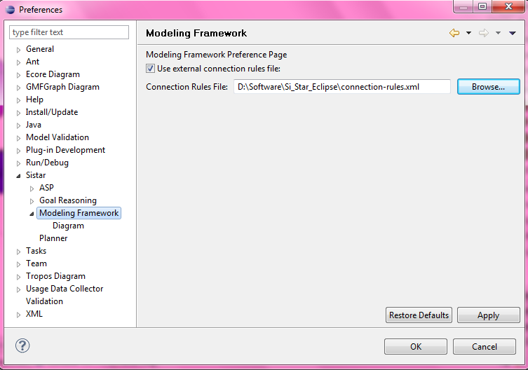
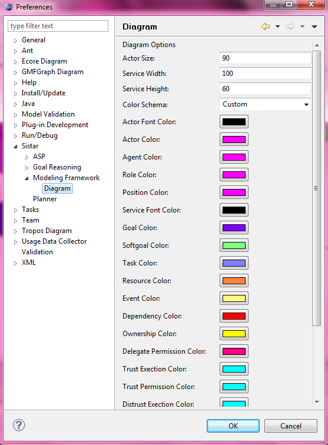

ModelingFramework
User can specify the connection rules file to be used, or use the internal connection rules

Diagram
User can specify the size of an element, color schema (black/white or custom) and the color of elements
